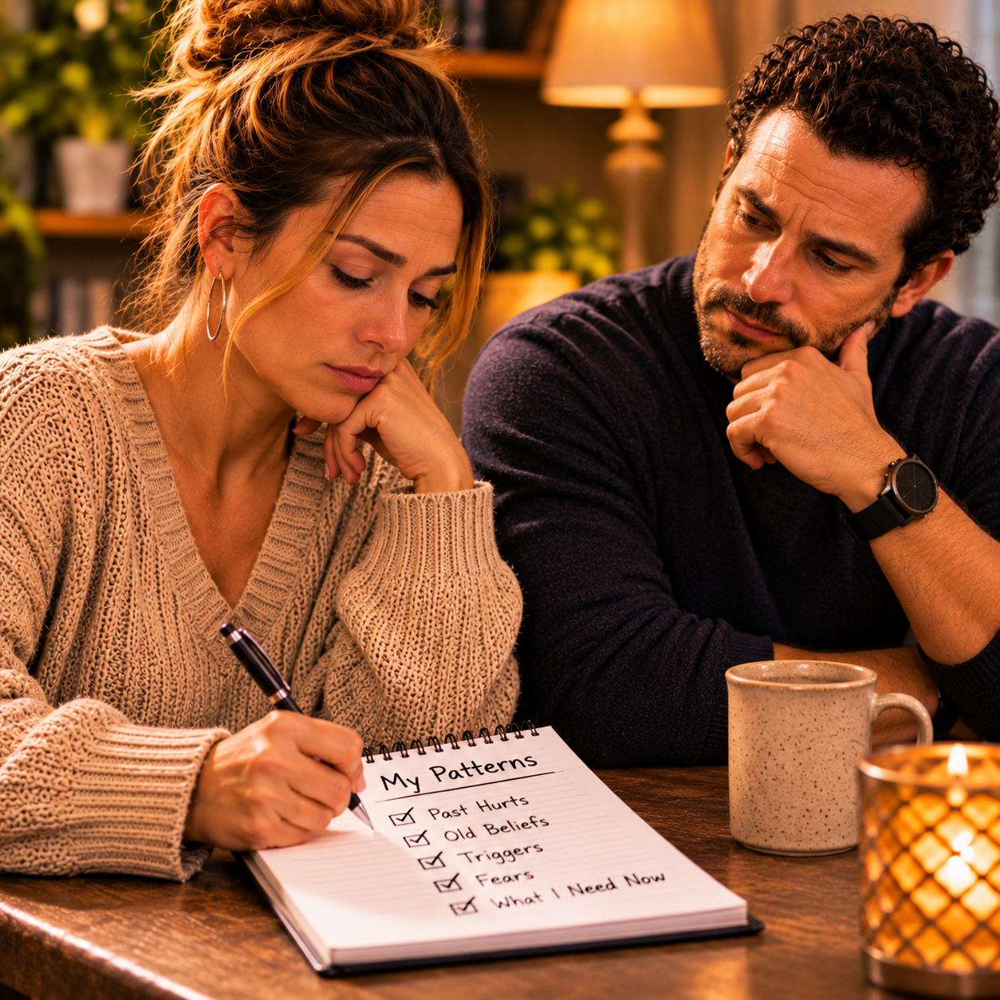

Nobody enters a relationship with an entirely empty history.
We bring memories, experiences, expectations, disappointments, lessons, and sometimes wounds that we have never fully addressed. Some of those experiences have helped us become more understanding, patient, and compassionate. Others have taught us to protect ourselves, question intentions, or remain guarded when someone begins getting close.
Whether we recognize it or not, our past often influences how we experience the present.
A person may enter a new relationship believing they are ready for something different, only to discover that certain situations bring back feelings they thought they had already overcome. A particular tone of voice may remind them of an argument from years ago. A lack of communication may bring back the fear of being abandoned. A broken promise may carry more emotional weight because of previous experiences with dishonesty.
The person standing beside them may have nothing to do with those earlier experiences, yet they may find themselves responding to a reaction that began long before the relationship existed.
This does not mean that people are incapable of moving forward. It means that moving forward sometimes requires understanding what we are carrying.
Sometimes the past influences us in ways we do not immediately recognize.
Those influences can appear in ordinary moments, often before we understand why a particular comment, disagreement, or change in someone’s behavior feels so significant. What seems like a reaction to the present may also carry the weight of something that happened long ago.
A person who grew up in an environment where disagreements regularly became explosive may learn to avoid confrontation. They may become uncomfortable when someone raises their voice, even during a conversation that the other person considers ordinary.
Someone who grew up feeling that their opinions did not matter may become especially sensitive when they believe they are being dismissed. They may work harder to explain themselves because they are afraid of returning to a place where nobody listens.
Another person may have learned that affection was inconsistent. They may have experienced love that was present one day and withdrawn the next, leaving them uncertain about where they stood. As adults, they may struggle when communication changes or when someone they love becomes emotionally distant.
These reactions can develop gradually. They may become so familiar that a person considers them simply part of their personality.
They might say, “I have always been this way.”
But something being familiar does not mean it cannot be examined or changed.
Sometimes the behavior we consider normal is actually a response we learned when we were trying to navigate an environment that did not give us many other options.
Understanding that history can help us recognize why certain situations affect us so deeply. It can also help us understand why someone else may respond differently from the way we would.
However, recognizing the origin of a behavior is only the beginning. We must also decide whether that behavior is still serving us or whether it is creating problems in the relationships we are trying to build.
Imagine someone asking their partner why they have not responded to a message.
On the surface, it seems like a simple question. Perhaps they were expecting a response earlier, and the delay left them wondering what happened.
But the person asking may be carrying an experience that makes unanswered messages especially difficult. In a previous relationship, silence may have been followed by dishonesty, emotional withdrawal, or the eventual discovery that something was wrong.
They may not consciously be thinking about that earlier experience. They may simply feel anxious and want reassurance.
Their partner, however, may see the question as unnecessary.
They were working, handling responsibilities, or occupied with something that required their attention. They did not realize the delay had created concern, and now they feel as though they are being questioned for something ordinary.
The conversation can quickly become frustrating.
“Why didn’t you answer?”
“I was busy.”
“Well, I didn’t know what was going on.”
“I can’t answer my phone every minute.”
Neither person may realize that they are responding to two different experiences.
One is reacting to uncertainty that feels familiar. The other is reacting to the feeling of being expected to explain every moment.
The question itself may be small, but the emotions surrounding it are much larger.
This is why it matters to understand what certain situations represent to each person. A delayed response may mean nothing to one person and trigger considerable anxiety in another. A request for reassurance may feel comforting to one person and overwhelming to someone who has experienced repeated questioning.
The goal is not to make one person responsible for the other’s entire history. It is to recognize that the same situation can carry different meanings depending on what someone has experienced.
There is a particular kind of fear that develops when someone has experienced disappointment and desperately wants their next relationship to succeed.
They may tell themselves that they will never ignore the warning signs again. They promise to pay closer attention, ask more questions, and avoid making decisions that could lead to another painful experience.
At first, those decisions may feel like healthy self protection.
But over time, the desire to avoid failure can become an overwhelming need to prevent every possible disappointment.
A person may begin examining every detail, questioning every change, and looking for explanations before there is enough information to understand what is happening. They may become uncomfortable when plans are uncertain or when their partner makes decisions they cannot anticipate.
Sometimes they may try to control situations because uncertainty feels more frightening than conflict.

They may not see themselves as controlling. They may believe they are simply being careful, protecting their heart, or making sure they do not repeat the mistakes of the past.
There is an important difference between being cautious and trying to control another person.
Caution allows someone to recognize concerns, establish boundaries, and make thoughtful decisions. Control attempts to remove uncertainty by limiting another person’s freedom, choices, or independence.
Fear may explain why someone seeks that control, but it does not make controlling behavior healthy.
A person can deserve reassurance without having the right to monitor every action. They can express concerns without demanding that their partner surrender their independence. They can protect themselves without making another person responsible for preventing every possible disappointment.
Learning to recognize that difference can be uncomfortable, particularly when the behavior developed as a way of avoiding pain.
But healing requires more than identifying what hurt us. It also requires recognizing when our methods of protection have begun hurting someone else.
It is easy to become so focused on our own experiences that we forget the person beside us has a history of their own.
They may have experienced relationships in which nothing they did seemed good enough. They may have been constantly criticized, questioned, or expected to anticipate another person’s needs. They may have learned to withdraw during conflict because every attempt to explain themselves seemed to make things worse.
Perhaps they have experienced disappointment, rejection, financial hardship, or circumstances that forced them to become more independent than they wanted to be.
Their history may influence how they respond when someone asks for more attention, requests reassurance, or expresses dissatisfaction.
A person who has spent years feeling criticized may become defensive when a partner brings up a concern. They may hear an accusation even when the other person is simply trying to explain a need.
Someone who has experienced controlling behavior may become especially sensitive to questions about their whereabouts or decisions. They may interpret ordinary requests for information as attempts to limit their independence.
That does not automatically mean their reaction is accurate, but it may help explain why the situation feels different to them.
This is why understanding cannot be limited to one person’s past.
If we expect someone to consider the experiences that shaped us, we must also be willing to consider the experiences that shaped them.
We cannot ask for compassion while refusing to offer it.
At the same time, compassion does not require accepting harmful behavior. Someone’s history may help explain why they become defensive, but they still have a responsibility to communicate respectfully. Someone else’s history may explain why they need reassurance, but they still have a responsibility to respect reasonable boundaries.
Both people deserve understanding, and both remain responsible for their actions.
Sometimes we do not simply bring memories from the past. We bring expectations about how relationships are supposed to work.
Perhaps we learned that the person who loves us should always know when something is wrong. Perhaps we believe that a partner should want to spend every available moment together. Maybe we were taught that disagreements mean something is seriously wrong, or that asking for personal space means someone is losing interest.
These beliefs can influence how we judge the person we are with.
We may expect them to communicate the way someone else communicated. We may expect them to demonstrate affection in the same way a previous partner did. We may even compare their behavior with an imagined version of what a successful relationship should look like.
The difficulty is that we are asking a new person to meet expectations that may have been formed under completely different circumstances.
Every relationship involves two individuals with different experiences, personalities, responsibilities, and ways of expressing themselves. What worked in one relationship may not work in another.
That does not mean we should abandon our standards or accept less than we deserve. It means we should understand which expectations reflect healthy relationship needs and which ones are based on habits, comparisons, or assumptions.
There is nothing wrong with expecting honesty, respect, consideration, and consistency. Those are important foundations.
But expecting someone to behave exactly like another person, respond to every situation exactly as we would, or understand needs we have never communicated creates an unrealistic standard.
A relationship deserves the opportunity to develop its own identity rather than constantly being measured against someone else’s history.
There is a difference between remembering something painful and allowing that experience to determine every response in the present.
Remembering helps us recognize what we have been through. It can teach us what boundaries matter, what warning signs deserve attention, and what kind of relationship we want to build.
Reliving happens when the present becomes so closely connected to the past that we begin responding to an old experience as though it is happening all over again.
Someone may have been betrayed before, but that does not mean every unanswered question represents dishonesty. Someone may have been abandoned, but that does not mean every request for personal space represents rejection. Someone may have experienced manipulation, but that does not mean every disagreement is an attempt to control them.
The ability to recognize those differences takes time and honest reflection.
It also requires a willingness to accept that some situations really do deserve concern. Not every fear is imaginary, and not every uncomfortable feeling should be dismissed as a reaction to the past.
The purpose is not to convince ourselves that nothing is wrong. It is to gather enough information to understand what is actually happening before deciding how to respond.
When we can separate what happened before from what is happening now, we give ourselves a better opportunity to make decisions based on the present rather than allowing old experiences to make those decisions for us.
One of the most difficult expectations that can enter a relationship is the belief that another person must heal every wound created by someone else.
A loving partner can offer reassurance, patience, encouragement, and support. They can demonstrate consistency and create opportunities for trust to grow. They can listen to difficult experiences without judging the person sharing them.
But they cannot go back and change what happened.
They cannot undo a previous betrayal, repair every family wound, or guarantee that disappointment will never happen again. They cannot remove every fear by promising that they will always behave perfectly.
When someone becomes responsible for healing everything another person has experienced, the relationship can begin carrying a weight that neither person knows how to manage.
The person seeking reassurance may feel increasingly dependent on their partner’s responses. The partner may feel that no amount of effort is enough to create security. Both can become exhausted.
Healing is personal work, even when support from someone we love makes the process easier.
A person must be willing to examine their own fears, seek appropriate support when needed, and develop healthier ways of responding to uncertainty. Their partner can walk alongside them, but cannot do that work in their place.
Likewise, someone who has caused hurt must not use the other person’s past as a way to dismiss legitimate concerns. Saying, “You’re only upset because of what happened before,” does not automatically make the current concern invalid.
Sometimes the present situation really does require accountability.
The responsibility is to understand the whole picture without using the past as either a weapon or an excuse.
One of the greatest challenges in a new or changing relationship is allowing someone to demonstrate who they are through their actual behavior rather than assuming they will repeat someone else’s mistakes.
Trust does not mean ignoring warning signs or believing every promise without question. It develops through consistency, honesty, and behavior that remains dependable over time.
But trust also requires a willingness to recognize when someone is making a genuine effort.
If a person is learning to communicate differently, it may take time before the change feels natural. If someone is trying to become more attentive, there may be moments when they still fall short. Growth does not mean perfection, but it should involve accountability and continued effort.
The same is true for someone working through their own reactions. They may not immediately stop overthinking, become comfortable with every difficult conversation, or learn to manage every fear. What matters is whether they recognize the pattern and are willing to work toward healthier responses.
Both people deserve room to grow, but neither should be expected to accept repeated harm simply because the other person is still learning.
Giving someone a fair opportunity to be different does not mean abandoning your judgment. It means allowing their present behavior to provide information rather than deciding their entire character based on someone else’s actions.
Consider what you bring into your relationships that may have nothing to do with the person you are currently loving.
Are there experiences that make you especially sensitive to rejection, dishonesty, criticism, or uncertainty? Do you sometimes expect a person to respond the way someone from your past responded? Have you developed habits that once helped you feel protected but now create distance between you and the people who care about you?
Consider whether your partner has experiences you have not fully understood. Have you assumed that their need for space means they do not care, or that their defensiveness means they have nothing to say? Have you allowed them to explain their perspective without immediately comparing it with what someone else did before?
Ask yourself whether you are using your history to understand your reactions or to justify them.
The past deserves acknowledgment, but it should not become a permanent excuse for behavior that needs to change.
You are allowed to remember what happened without allowing it to determine every relationship that follows. You are allowed to protect your heart without controlling someone else’s choices. You are allowed to expect respect without demanding perfection.
And you are allowed to recognize that the person beside you may be carrying something you have never experienced.
We cannot choose every experience that shaped us, and we cannot always control the memories that return when something feels familiar.
But we can learn to recognize what those experiences have taught us, examine whether those lessons are still helpful, and decide how we want to respond moving forward.
Sometimes that means admitting that we have been unfair to someone who was not responsible for our previous hurt. Sometimes it means recognizing that we have accepted behavior we should no longer tolerate. Sometimes it means learning to communicate a fear instead of allowing that fear to become an accusation.
Growth may require uncomfortable honesty, but that honesty creates an opportunity to build something healthier.
The person we love should not have to spend their entire relationship proving that they are not someone from our past. At the same time, we should never be expected to ignore present behavior simply because someone claims their intentions are good.
Understanding requires both compassion and discernment.
We must be willing to recognize where our reactions began while remaining accountable for where those reactions lead. We must allow others the opportunity to demonstrate who they are, while also paying attention to whether their behavior reflects the respect and consideration a healthy relationship requires.
The past will always be part of our story, but it does not have to write every chapter that follows.
And sometimes, before we can change the way we respond to the person we love, we must first recognize the patterns we have carried into the relationship without ever realizing how much influence they still have.
Because what we bring from yesterday can shape the way we see someone today, but what we choose to do with that understanding will help determine what happens tomorrow.